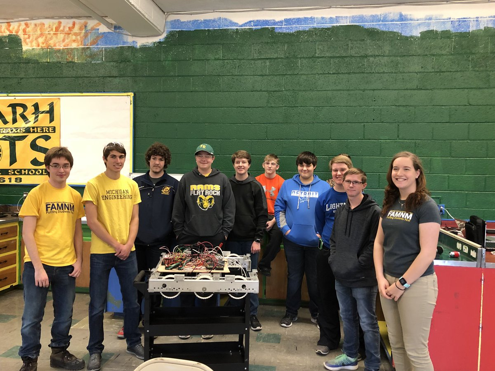

Freelance Mentor Program
The Freelance Mentor Program provides short-term mentoring resources to local teams of all levels. University of Michigan students with expertise in areas such as chassis, electronics, programming, presentations, and business plans are available assist teams on a case by case basis. Some notable examples include a day of autonomous mentoring for FRC team WARHBOTS (shown below), an afternoon of practice match refereeing and practice judging sessions for the five Chelsea and Dexter FTC teams, and a project presentation review and critique for FLL team The Robobears.
Looking for help? Reach out to the team coordinator for your level of FIRST: famnm.frc@umich.edu, famnm.ftc@umich.edu, or famnm.fll@umich.edu.
Pictured: Freelance mentors helping out Team 6618 - WARHBOTS for {{ FIRST }} Power Up!